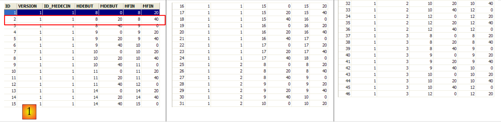

2. : caso práctico
2.1. El problema
Volvamos a la aplicación que queremos crear. Partimos de una aplicación existente con la siguiente arquitectura:
 |
Para quienes quieran saber más sobre:
- NHibernate: Introducción a NHibernate;
- la aplicación ASP.NET (WebForms) con NHibernate y Spring: Creación de una aplicación web de tres capas con ASP.NET, Spring.NET y NHibernate [http://tahe.developpez.com/dotnet/pam-aspnet/].
Queremos transformar la aplicación anterior en esta:
 |
donde EF5 ha sustituido a NHibernate. Esta aplicación sirve de pretexto para estudiar EF5. Dado que Spring.NET nos permite cambiar fácilmente de capa sin estropearlo todo, la aplicación 2 utilizará la misma capa [ASP.NET] que la aplicación 1. Dado que este documento se centra en EF5, no explicaremos cómo se escribe esta capa. La introduciremos en la aplicación 2 para comprobar que funciona. Nos limitaremos a explicar los cambios que hay que realizar en el archivo de configuración de Spring.NET.
El caso práctico es el siguiente. Queremos ofrecer a los médicos un servicio de gestión de citas que funcione según el siguiente principio:
- un servicio de secretaría se encarga de gestionar las citas de RV para un gran número de médicos. Este servicio puede reducirse a una sola persona. El salario de esta persona se reparte entre todos los médicos que utilizan el servicio de RV;
- el servicio de secretaría y todos los médicos están conectados a Internet;
- las citas se registran en una base de datos centralizada, accesible a través de Internet tanto para la secretaría como para los médicos;
- la asignación de citas RV la realiza normalmente la secretaría. También pueden hacerlo los propios médicos. Este es el caso, en particular, cuando, al finalizar una consulta, el propio médico asigna una nueva cita RV a su paciente.
La arquitectura del servicio de asignación de RV es la siguiente:
 |
Los médicos ganarán en eficiencia si ya no tienen que gestionar el RV. Si son suficientes, su contribución a los gastos de funcionamiento de la secretaría será mínima. Llamaremos a la aplicación [RdvMedecins]. A continuación, presentamos unas capturas de pantalla de su funcionamiento.
La página de inicio de la aplicación es la siguiente:

Desde esta primera página, el usuario (Secretaría, Médico) realizará una serie de acciones. A continuación las presentamos. La vista de la izquierda muestra la pantalla desde la que el usuario realiza una solicitud; la de la derecha, la respuesta enviada por el servidor.
 |
 |
 |
 |
 |
2.2. La base de datos
La base de datos utilizada por la aplicación NHibernate es una base de datos MySQL5 con cuatro tablas:

Nos servirá de referencia para crear todas nuestras bases de datos.
2.2.1. La tabla [MEDECINS]
Contiene información sobre los médicos gestionados por la aplicación [RdvMedecins].
 |  |
- ID: número que identifica al médico —clave primaria de la tabla
- VERSION: número que identifica la versión de la fila en la tabla. Este número se incrementa en 1 cada vez que se realiza una modificación en la fila.
- NOM: el apellido del médico
- PRENOM: su nombre
- TITRE: su tratamiento (Srta., Sra., Sr.)
2.2.2. La tabla [CLIENTS]
Los clientes de los distintos médicos se registran en la tabla [CLIENTS]:
 |  |
- ID: número de identificación del cliente —clave primaria de la tabla
- VERSION: número que identifica la versión de la línea en la tabla. Este número se incrementa en 1 cada vez que se realiza una modificación en la línea.
- NOM: el nombre del cliente
- PRENOM: su nombre
- TITRE: su tratamiento (Srta., Sra., Sr.)
2.2.3. La tabla [CRENEAUX]
En ella se enumeran las franjas horarias en las que son posibles los RV:
 |
 |
- ID: número que identifica la franja horaria —clave primaria de la tabla
- VERSION: número que identifica la versión de la fila en la tabla. Este número se incrementa en 1 cada vez que se realiza una modificación en la fila.
- ID_MEDECIN: número que identifica al médico al que pertenece este horario – clave externa en la columna MEDECINS (ID).
- HDEBUT: hora de inicio de la franja horaria
- MDEBUT: minutos de inicio de la franja horaria
- HFIN: hora de fin de la franja horaria
- MFIN: minutos de fin de franja
La segunda línea de la tabla [CRENEAUX] (véase [1] más arriba) indica, por ejemplo, que el turno n.º 2 comienza a las 8:20 y termina a las 8:40, y corresponde a la doctora n.º 1 (la Sra. Marie PELISSIER).
2.2.4. La tabla [RV]
Enumera los RV asignados a cada médico:
 |
- ID: número que identifica de forma única el RV – clave primaria
- JOUR: día del RV
- ID_CRENEAU: franja horaria del RV —clave externa en la columna [ID] de la tabla [CRENEAUX]—; determina tanto la franja horaria como el médico correspondiente.
- ID_CLIENT: número del cliente para el que se realiza la reserva – clave externa en la columna [ID] de la tabla [CLIENTS]
Esta tabla tiene una restricción de unicidad de e e sobre los valores de las columnas unidas (JOUR, ID_CRENEAU):
Si una fila de la tabla [RV] tiene el valor (JOUR1, ID_CRENEAU1) en las columnas (JOUR, ID_CRENEAU), dicho valor no puede aparecer en ningún otro sitio. De lo contrario, significaría que se han registrado dos RV al mismo tiempo para el mismo médico. Desde el punto de vista de la programación en Java, el controlador JDBC de la base de datos lanza un SQLException cuando se produce este caso.
La línea de id igual a 7 (véase [1] más arriba) significa que se ha reservado un RV para la franja horaria n.º 10 y el cliente n.º 2 el 10/09/2006. La tabla [CRENEAUX] nos indica que la franja n.º 10 corresponde al horario de 11:00 a 11:20 y pertenece a la doctora n.º 1 (la Sra. Marie PELISSIER). La tabla [CLIENTS] nos indica que el cliente n.º 2 es la Sra. Christine GERMAN.
Este caso práctico ha sido objeto de un artículo Java [http://tahe.developpez.com/java/primefaces] en el que se utiliza Hibernate para Java ORM.